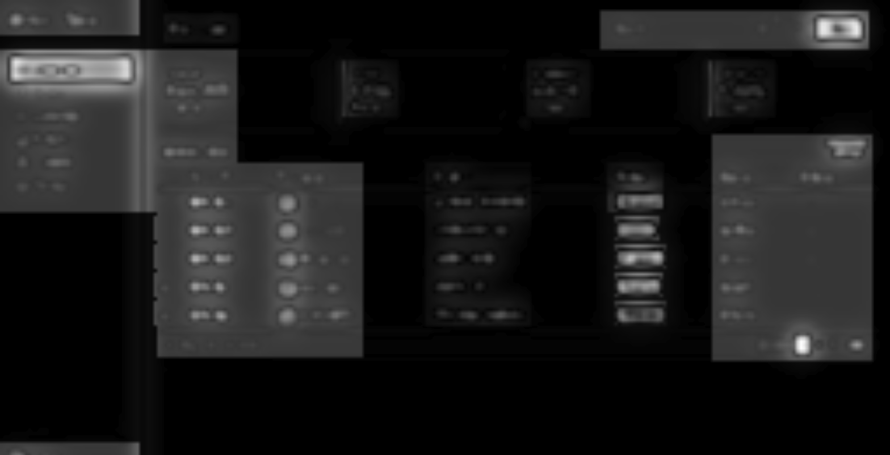
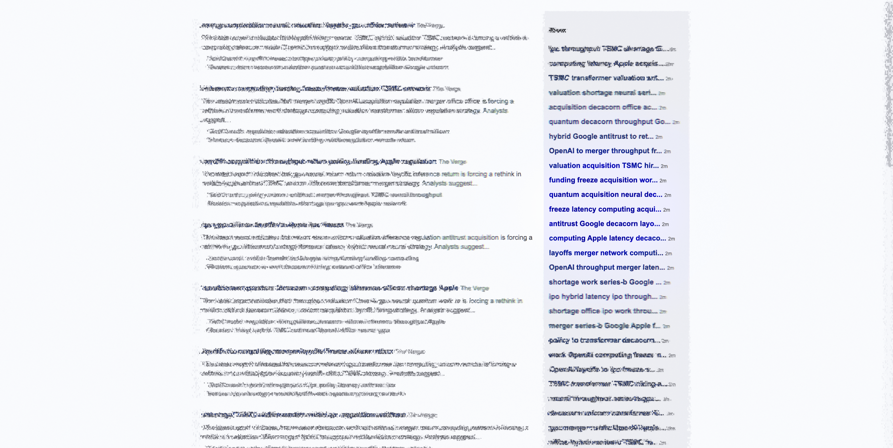
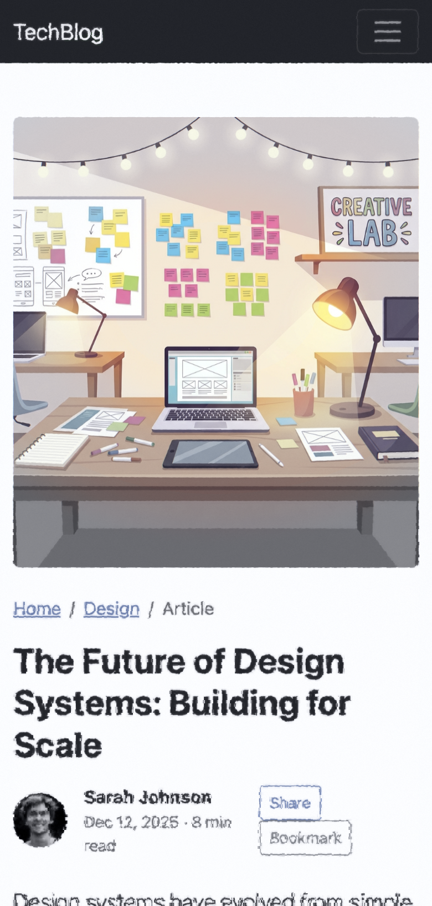

Your Brain's Rendering Pipeline, in 886 Lines of GLSL⚙
GLSL (OpenGL Shading Language) is a C-like language that runs directly on
the GPU. A fragment shader is a program that executes once per pixel,
in parallel, every frame — making it ideal for real-time image processing. The entire
foveated vision simulation runs as a single fragment shader at 60fps.
Vision is an information processing pipeline. At each stage, the signal is transformed:
retinal ganglion cells decompose spatial frequencies. The LGN gates what reaches cortex.
V1 pools features across receptive fields that grow with eccentricity.
V4 reshapes color and form. The question that drives this project —
the same question behind any good recommender system or search engine —
is: what happens to the signal at each stage? What's preserved, what's lost,
and what does the representation look like when it arrives downstream?
Scrutinizer makes those transformations explicit. Each biological stage maps to
a signal-processing operation in the shader: Difference-of-Gaussians for ganglion
cell decomposition, per-band M-scaling for cortical magnification, saliency-weighted
suppression for the LGN gate. The data flows through, and at each stage you can
see exactly what it looks like.
Retina → LGN → V1 → V4 · implemented in a single GLSL fragment shader
The simulation running live on a browser page. Follow the cursor — that's your fovea.
Wrapped in a browser built with the popular Electron framework, the shader runs on any
web page in real time — turning the screen into a window onto your own visual processing.
The Pipeline: Biology → GLSL
The visual system is vastly more complex than any current simulation captures —
dozens of cortical areas, parallel processing streams, recurrent feedback loops.
The shader models four stages chosen for their outsized impact on peripheral
appearance: retinal spatial filtering, LGN attentional gating, V1 feature integration,
and V4 color processing. Eccentricity from the gaze point drives every parameter.
$\vec{P}_{\text{fragment}}$ is the screen position of the current pixel (in GPU terminology,
a fragment — the shader runs this equation independently for every pixel on screen,
every frame). $\vec{P}_{\text{gaze}}$ is the current gaze point (mouse position or eye-tracker input).
At eccentricity = 0, you're at the fovea (full detail). At 1.0, you're at the foveal boundary.
At 2.5, parafovea. Beyond that: peripheral vision, where most of the visual field lives — and
where most of the shader's work happens.
Biological Primer
Much of what we know about these structures has been understood for decades —
Kuffler described center-surround receptive fields in 1953, Hubel and Wiesel mapped
orientation selectivity in 1962. The sections below summarize the minimum context
for following the simulation. For deeper treatment, see Wandell's
Foundations of Vision (1995), or this project's
annotated bibliography,
which maps each cited paper to its role in the shader implementation.
The Retina: Where Vision Begins
The retina is not a passive sensor — it's a layered neural circuit. Light hits
photoreceptors (rods and cones), which convert photons to electrical signals.
These signals pass through bipolar cells to retinal ganglion cells, whose
axons form the optic nerve. In the fovea — a 1.5mm pit at the retina's center,
densely packed with cones — each cone connects to its own ganglion cell (1:1 wiring). In the
periphery, 100+ rods converge onto a single ganglion cell, trading spatial resolution for
sensitivity. This convergence ratio is the fundamental reason peripheral vision is blurry.
Receptive Fields and Center-Surround🔬
Kuffler's 1953 experiment was elegantly simple: he recorded from individual ganglion cells
in the cat retina while shining small spots of light at different positions. He found that
each cell responded to a specific patch of the visual field — its receptive field — and
that a spot in the center excited the cell while a spot in the surround inhibited it (or vice versa).
This center-surround antagonism is the retina's first act of computation: extracting contrast,
not absolute brightness.
A neuron's receptive field is the region of visual space that drives its
response. Retinal ganglion cells have center-surround receptive fields
(Kuffler, 1953): an excitatory center ringed by an inhibitory surround, or vice versa.
This makes them bandpass filters — they respond to spatial frequencies matching
their field size, not to uniform illumination. The Difference-of-Gaussians (DoG) is a
mathematical model of this response profile. Critically, receptive field size
scales with eccentricity: larger fields in the periphery means coarser
frequency tuning further from fixation.
Receptive Field Mosaic
Each circle represents one ganglion cell's receptive field.
Dense, small fields at the fovea; sparse, large fields in the periphery. This is
why peripheral vision is blurry: fewer cells, each pooling a wider region.
Photoreceptor Convergence
Photoreceptors (top) funnel onto ganglion cells (bottom).
At the fovea, each cone has its own dedicated ganglion cell (1:1). In the periphery,
dozens of rods converge onto a single cell with a large receptive field —
gaining sensitivity, losing spatial resolution.
The Visual Pathway
Signals leave the retina via the optic nerve and reach the Lateral Geniculate
Nucleus (LGN), a six-layered structure in the thalamus. The LGN is organized
into magnocellular layers (fast, achromatic, motion-sensitive — fed by
parasol ganglion cells) and parvocellular layers (slower, color-sensitive,
high spatial frequency — fed by midget ganglion cells). From the LGN, signals project
to V1 (primary visual cortex) in the occipital lobe, where
orientation-selective neurons (Hubel & Wiesel, 1962) decompose the image into local
features. Higher areas — V2, V4 — process increasingly complex properties:
contours, color constancy, object recognition.
Eccentricity and the Three Zones
Eccentricity is the angular distance from fixation, measured in degrees of
visual angle. The visual field is conventionally divided into functional zones: the
fovea (0–2°, highest acuity, cone-dominated), the
parafovea (2–5°, where crowding begins to impair recognition), and the
periphery (>5°, rod-dominated, coarse spatial pooling). The cortex
devotes disproportionate surface area to the fovea — a property called
cortical magnification (M-scaling). This is why a letter at 10° eccentricity
must be ~5x larger than a foveal letter to be equally legible.
Stage 1: The LGN Gate
"The LGN is not a relay station. It's a gate."
— Sherman & Guillery, The role of the thalamus in the flow of information to the cortex (2002)
The Lateral Geniculate Nucleus sits between retina and cortex. For decades, neuroscientists
treated it as a simple relay — signals pass through unchanged. Sherman and Guillery showed
it's actually an attentional gatekeeper: top-down signals from cortex modulate what gets
through. If you've built information retrieval systems, this is a familiar pattern —
a filter stage that decides what enters the processing pipeline at all, before any
expensive downstream computation. In the shader, this gating is instantiated as two
binary switches and a multiplication. The signal either passes or it doesn't.
Structure Masking⚙
The structure map is packed into a standard RGB texture — a pragmatic reuse of an
existing GPU data structure. Each pixel encodes three signals as color channels, which
the shader reads as vec3 components. No custom buffer formats or additional
render passes needed — the GPU's texture sampling hardware does the interpolation for free.
The LGN gate needs to know what kind of content occupies each region of the page —
and how that knowledge is represented constrains what operations are natural downstream.
A content analysis pass (content-analysis.js) scans the DOM and encodes
three signals into a structure map:
Rhythm — text cadence and repetition (are there regular line breaks, list items, tabular patterns?)
Density — visual weight per region (dense paragraph vs. whitespace vs. sparse navigation)
Type — element classification (text, image, interactive control, empty)
When the LGN stage encounters low density — empty whitespace between content — it
suppresses the downstream simulation entirely. The biological LGN doesn't gate blank
space to cortex; the simulation mirrors this by zeroing the suppression factor for
regions with no visual content to process.
// LGN Structure Masking — lines 319–323 of peripheral2.fragif (config.lgn_use_structure_mask) {
if (u_has_structure > 0.5 && signal.density < 0.1) {
signal.suppressionFactor = 0.0; // Skip peripheral simulation for empty space
}
}
Saliency Gating
The saliency map (edge detection + color contrast, temporally smoothed) tells the LGN
what deserves processing bandwidth. This is the same problem biology solves:
the retina captures ~107 bits/sec but the optic nerve transmits ~106.
The visual system doesn't "degrade then un-degrade" — it selectively allocates limited
processing resources to high-value input. Our simulation mirrors this: salient regions
receive up to 70% more of the rendering budget (reduced peripheral filtering),
while low-saliency regions are processed cheaply.
At saliency=1.0, the suppression factor drops to 0.3 — the pipeline passes most of the
original signal through. At saliency=0.0, full peripheral filtering applies.
Both biology and simulation share the same driver: compute demand management.
foveaparaperiph
Dashboard — center focus. The fovea reveals full detail at
gaze point. Peripheral regions are filtered through the full LGN→V1→V4 pipeline.

Saliency map. Bright = high saliency = more processing bandwidth
allocated. Text blocks, faces, and colored status badges demand the most resources.
Stage 2: V1 Feature Extraction
After the LGN gate, the signal that survives enters V1 — and here the nature of
the representation changes fundamentally. Primary visual cortex decomposes the
signal into features: orientation, spatial frequency, motion. In the periphery, these features
are extracted at progressively lower resolution — receptive fields grow larger,
features crowd into each other, and positional certainty degrades.
Scrutinizer's V1 stage implements three key peripheral phenomena: positional
uncertainty (domain warping), crowding (feature scrambling),
and spatial pooling (resolution loss). The LGN's suppression factor
modulates all of them — up to 25% attenuation for salient content.
Domain Warping: Positional Uncertainty
In the periphery, you can detect that something is there but not where
exactly it is. Scrutinizer simulates this with fractal noise displacement — two octaves
of Simplex noise at 150x and 300x frequency, with an anisotropic 2x horizontal bias
(horizontal crowding is more severe than vertical in human vision).
Where $s$ = distortion strength (eccentricity-scaled) and $I$ = intensity.
The 0.0024 constant maps perceptual data: at the foveal boundary, displacement
is ~2 pixels. At the far periphery, ~24 pixels — a 12x range matching empirical crowding zones.
Crowding: The Fundamental Limit
"Crowding is not blur." — Denis Pelli (2008). You can detect a letter in your periphery.
You cannot identify it when flanked by other letters. The bottleneck isn't resolution —
it's obligatory feature integration across the receptive field.
This is arguably the most important phenomenon in peripheral vision — and it's an
information-theoretic one. Crowding determines not what you can't see, but what
you can't separate. Adjacent features are compulsorily pooled — averaged,
texture-ified — once they share a receptive field. The information isn't gone; it's been
irreversibly mixed. The individual signals are still in there, but the representation
can no longer distinguish them. Bouma's law quantifies the critical spacing:
Bouma's Law — Critical Spacing
$$s \approx 0.5 \cdot \phi$$
Where $s$ = minimum spacing to avoid crowding and $\phi$ = eccentricity from fixation.
At 10° eccentricity, targets must be ≥5° apart to be individually identified.
This linear scaling with eccentricity mirrors cortical magnification — it's the same
constraint expressed differently.
The shader implements two crowding modes:
Fractal Noise (Mode 0) — Continuous warp via Simplex noise, increasing amplitude with eccentricity. Preserves overall structure but scrambles local features.
Discrete Scramble (Mode 1) — Grid-based cell shredding. Each cell gets a random displacement vector, creating a "shattered glass" effect. Saliency guides where the grid breaks.
Article — center focus. V1 crowding filters paragraph text in the periphery
while headlines receive more bandwidth (larger receptive fields).
foveaparaperiph
E-commerce — product focus. When you fixate on the product image,
the price tag, CTA button, and reviews are filtered through V1 scrambling — a visualization
of the feature pooling that constrains peripheral object recognition.
Saliency-Guided Pixelation (Mode 3)
A more utilitarian V1 mode: content is quantized into blocks whose size depends on
both eccentricity and the LGN's saliency signal. High-saliency regions get
smaller blocks (more detail preserved). The saliency metric is discretized into 4
steps to prevent gradient artifacts:
By the time the signal reaches the periphery, what does the representation actually
contain? Rosenholtz et al. (2012) answered this precisely:
summary statistics — local texture-like representations that
preserve aggregate properties (mean color, dominant orientation, spatial frequency
distribution) while discarding individual feature identity. Think of it as a lossy
compression where the encoder is the visual system itself. Their
mongrel images, synthesized to match these statistics, are perceptually
indistinguishable from the original in the periphery. The catch: synthesizing
mongrels takes >60 seconds per frame, even with 2026 prosumer hardware.
The shader's DoG band decomposition is a real-time approximation of this idea.
Rather than computing full texture statistics, it decomposes the image into spatial
frequency bands — each corresponding to a different scale of visual structure — and
attenuates them independently based on eccentricity. This mirrors how retinal ganglion
cells act as bandpass filters with center-surround receptive fields whose size
scales with eccentricity (Curcio et al., 1990). Uniform MIP blurring treats
all frequencies equally; the DoG decomposition lets fine detail drop out before coarse
structure, matching the biological attenuation profile.
The Laplacian Pyramid⚙
A MIP chain (from Latin multum in parvo, "much in little") is a
series of progressively downsampled copies of a texture that GPUs generate automatically.
Level 0 is the full-resolution image; level 1 is half-resolution; level 2 is quarter, etc.
GPUs use these for texture filtering at different distances. The shader repurposes this
existing hardware feature: subtracting adjacent MIP levels produces a
Laplacian pyramid, where each level captures a specific band of spatial
frequencies — essentially a free frequency decomposition.
The shader decomposes the existing hardware MIP chain into a Laplacian pyramid —
each band captures a specific spatial frequency range:
Band 01–2 px: serifs, thin strokes
Band 12–4 px: letter bodies, small icons
Band 24–8 px: words, UI elements
Band 38–16 px: buttons, layout blocks
ResidualDC: overall color & luminance (always preserved)
Each band has its own cutoff eccentricity — the distance from the fovea where that
frequency band is fully attenuated. The cutoffs follow a geometric progression (each
band persists ~2x further), matching the $E_2$ scaling of cortical magnification:
Where $E_2$ is the half-resolution eccentricity — the point where spatial resolution
drops to half its foveal value. In the shader: u_dog_e2, user-adjustable.
Each band's weight is computed via smoothstep rolloff, with a transition width controlled
by u_dog_sharpness. At sharpness=0, the transitions are wide and gradual
(biological). At sharpness=1, they're narrow and crisp (engineering utility mode).
Close to the fovea, all bands survive — full detail. In the parafovea, Band 0 (serifs)
drops out first. You can still read words but individual letterforms lose their character.
Further out, Band 1 fades — letter shapes become blobs. In the far periphery, only Bands
2–3 and the residual remain: you see buttons and layout blocks but not their labels.
This cascade — fine detail filtered first, coarse structure passing through longest — is how
the biological system manages its bandwidth, and it's how the shader manages it too.
The signal isn't uniformly blurred; it's selectively attenuated by frequency band,
approximating the frequency-selective loss that Rosenholtz's summary statistics model
predicts, at real-time rates.
Structure map — article. The content analysis feeds the LGN.
Red channel = text rhythm, Green = density, Blue = element type. DoG band weights
are modulated by this structure.
foveaparaperiph
Techmeme — center focus. Dense news layout. DoG preserves
headline structure while filtering individual link text. The data table density is exactly
the kind of content where DoG outperforms uniform blur.
Fidelity Gap: What DoG Misses
The DoG decomposition captures frequency-selective attenuation but not the full
mongrel texture model. True summary statistics include orientation distributions,
phase correlations, and cross-scale feature conjunctions that our isotropic bands
discard. Adding oriented DoG filters — even just horizontal/vertical — would
double the texture lookups but could capture the anisotropy of real V1 receptive
fields (Gabor-like, phase-sensitive). The gap between our real-time approximation
and a full Rosenholtz-style synthesis is where future work lives.
Stage 3: V4 Color & Aesthetics
Visual area V4 processes color, shape, and object recognition. In the periphery,
color perception shifts dramatically — the transition from cone-dominated (foveal) to
rod-dominated (peripheral) processing alters hue sensitivity, saturation, and spectral
response. The shader's V4 stage simulates these shifts using Oklab color space,
rod-spectrum tinting, and selectable aesthetic rendering modes.
Oklab: Perceptually Uniform Desaturation⚙
A color space is a coordinate system for describing colors. RGB maps
to hardware (red/green/blue light intensities) but doesn't correspond to human perception —
equal RGB steps don't look like equal brightness steps. Perceptually uniform
spaces like Oklab are designed so that equal mathematical distances correspond to equal
perceived color differences. This matters when you need to smoothly remove color: in RGB,
desaturation causes unwanted hue shifts. In Oklab, you can zero out the chrominance
channels (a, b) and get clean, hue-stable grayscale.
A critical design choice. If you desaturate in RGB or HSL, hue shifts as saturation
drops — warm colors skew yellow, cool colors skew cyan. Oklab (Ottosson, 2020)
separates lightness (L) from chrominance (a, b) in a perceptually uniform space.
Killing a and b channels produces clean grayscale without hue contamination.
Oklab Desaturation
$$L_{ab} \cdot \begin{pmatrix} 1 \\ 1 - f \\ 1 - f \end{pmatrix} \quad \text{where } f = \text{smoothstep}(r_{\text{fovea}}, \, r_{\text{fovea}} \cdot k, \, d)$$
$f$ = desaturation factor, ramping from 0 at the foveal edge to 1 at the ramp end.
Lightness is preserved. Only chrominance fades. The "Red Kill Switch" (line 625)
selectively suppresses the red-green axis first — matching the Purkinje shift
where reds darken before blues in peripheral/scotopic vision.
The Five Aesthetic Modes
Mode
u_v4_style_id
Biology / Design Intent
Usability
0
High-Key Ghosting — eigengrau base, red kill switch. Best for UX evaluation. Shows what users actually perceive in the periphery.
Biological
1
Purkinje Darkening — reds darken, global vignette dims peripheral luminance. The most scientifically accurate mode.
Frosted
2
Frosted glass aesthetic. For presentations where you want peripheral blur without biological artifacts.
Wireframe
3
Edge-detected (Sobel operator) wireframe rendering. Shows structure without surface.
Cyberpunk
4
Saturation boost + halftone dot pattern. For visual storytelling and demos.
The visual system processes information through parallel streams from the retina onward.
Parasol ganglion cells (large, fast) feed the magnocellular (M) layers
of the LGN (layers 1–2), carrying luminance contrast and motion signals. Midget ganglion
cells (small, slower) feed the parvocellular (P) layers (layers 3–6),
carrying color and fine spatial detail. These streams remain largely segregated through V1 and into
higher cortical areas — the M-stream drives motion perception (dorsal/where pathway), while the
P-stream drives object recognition (ventral/what pathway). Livingstone & Hubel (1988) established
this segregation; it explains why you can detect motion in far peripheral vision where color and
form have long since degraded.
The magnocellular (M) pathway — fast, achromatic, motion-sensitive — preserves luminance
contrast even as the parvocellular (P) pathway loses color and detail. The shader samples
the clean (undistorted) image, computes a luminance ratio, and blends it back into the
simulated output. This is why you can still detect edges and motion in your far periphery
even when you can't see color or detail.
Structure map — Techmeme. The structure analysis
that feeds the LGN gate. Dense news sites reveal the rhythm/density/type decomposition
that drives the entire pipeline.

Saliency map — Techmeme. Edge detection + color contrast in Oklab space.
Bright regions receive more processing bandwidth through the LGN gate.
Project Trajectory —
374 commits in 98 days, three shader reverts in 30 minutes, and the gap between
biological accuracy and perceptual plausibility. Read the development arc →
The Full Mapping: Biology → GLSL
Each row below maps a biological phenomenon to its shader implementation, with the
controlling parameter. For full citations and methodology, see the
scientific literature review.
Biological Phenomenon
Shader Implementation
Key Uniform / Constant
Cone density (1:1 foveal wiring)
Full-resolution sampling at eccentricity = 0
u_foveaRadius
Rod density (100:1 convergence)
MIP pyramid / DoG band attenuation
u_dog_e2, u_dog_sharpness
Ganglion cell receptive fields
Difference-of-Gaussians band decomposition
band0–band3, c0–c3
Cortical magnification (M-scaling)
Per-band cutoff eccentricities, geometric 2x
c_k = 0.3 · 2^k · E2
LGN attentional gating
Saliency-modulated suppression factor
u_lgn_use_saliency_gate
V1 crowding (Pelli 2008)
Fractal noise warp + discrete scramble
u_v1_distortion_type
Positional uncertainty
Simplex noise domain warping, 2x H bias
fractalWarp.x *= 2.0
Purkinje shift
Red-green axis kill in Oklab
lab.y *= (1.0 - fade)
Rod spectral sensitivity (505nm)
Cyan tinting in far periphery
rodColorLab vec3(L, 0.0, -0.05)
Magnocellular luminance preservation
Clean/distorted luma ratio blending
contrastPreservation mix(0.6, 0.1)
Saccadic suppression
Velocity-gated jitter modulation
u_velocity
Eigengrau (dark adaptation)
Background color at 0.96 lightness in Oklab
vec3(0.96 * lab.x, 0.0, -0.05)
Mobile: The Smaller Fovea
On mobile, the fovea subtends the same visual angle, but the screen is held closer and
the viewport is denser. The simulation reveals something counterintuitive: much of the content
on a phone screen sits in the parafoveal zone — not the far periphery, but the transitional
region where feature integration begins to degrade. This is where crowding first bites.

foveaparaperiph
iPhone 14 — article. The same article page at mobile scale.
Much of the content sits in the parafoveal zone, where feature integration starts to blur individual elements.
foveaparaperiph
iPhone 14 — dashboard. Data-dense UIs on mobile. The fovea
reveals one card; most content falls into parafoveal territory.
foveaparaperiph
iPad Air — article. Tablet's larger viewport provides a middle ground. More foveal real estate, but still significant parafoveal load.
foveaparaperiph
iPad Air — dashboard. The data table density makes
this an ideal test case for the DoG band decomposition — rows fade by spatial frequency,
not uniformly.
Andy Edmonds studied cognitive science at Carnegie Mellon, Georgia Tech, and Clemson,
then left academia in 1995 for what became two decades of machine learning at scale —
shipping recommendation systems, search relevance, and information retrieval products at
eBay, Adobe, Microsoft, and Meta. The through-line across all of it is the same question
that drew him to cognitive science in the first place: how does information flow
through a system, and what happens to the signal at each stage?
Scrutinizer is that question applied to the visual system.
The retina decomposes. The LGN gates. V1 pools. V4 recolors. Each stage transforms
the signal in specific, modelable ways — and those transformations map cleanly onto
GPU operations. The shader isn't a metaphor for the biology. It's an implementation
of the same information-processing architecture, running on different hardware.